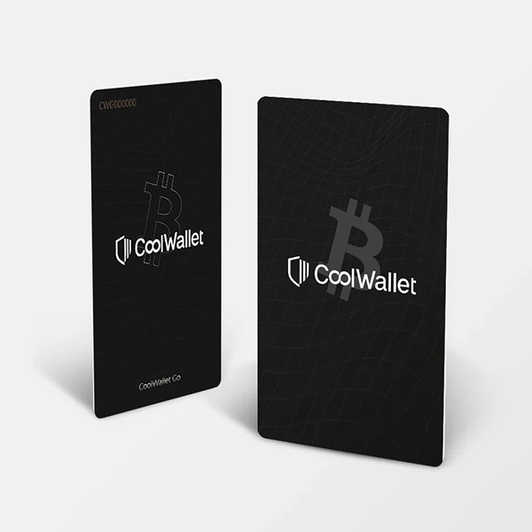
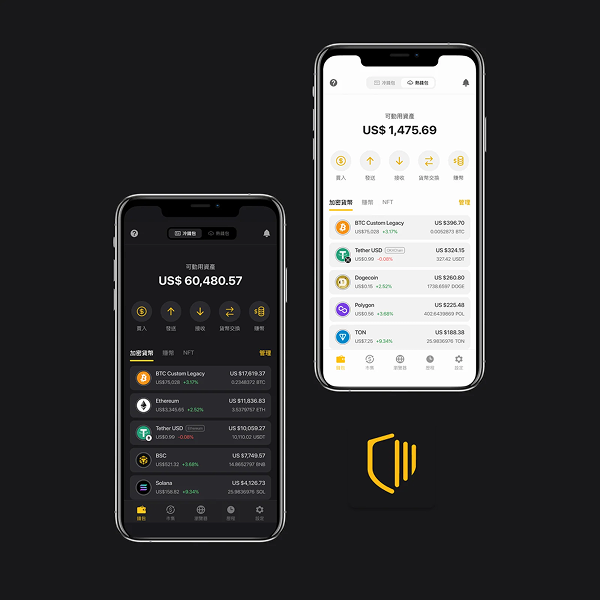
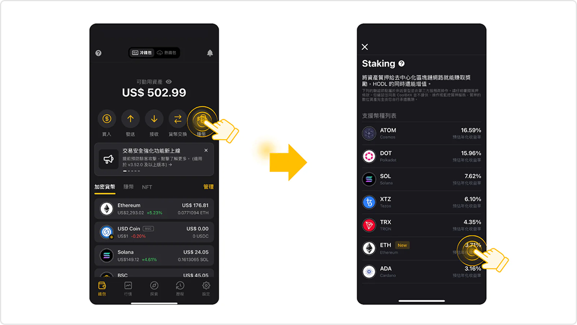
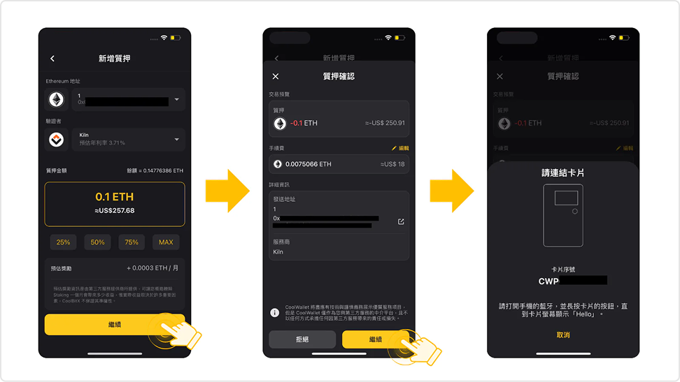

← 返回首頁
 ← 返回首頁
← 返回首頁
CoolWallet - 交易功能使用率增長
專案背景
什麼是 CoolWallet？
CoolWallet 是一個虛擬資產管理的產品，可視為去中心化的網路銀行，提供消費端用戶存放與交易虛擬貨幣的服務。主要包含硬體錢包（CoolWallet 實體卡片）以及配對的 App，讓用戶安全地管理加密貨幣資產。
目標
設計指標追蹤使用率
CoolWallet App 屬於資產管理型產品，也包含如快速兌換（立即兌換）、鏈入入金等。其主要收益來自交易手續費 40-60%。盡管前期的開發均以公司的 KPI 為主，為了讓產品開發成果能顯現出更大的價值，我提議了訂定服務使用率作為新的核心指標。


我的角色與具體工作內容
我的角色
2022/5 – 2023/9
資深業務策略經理
2023/9 – 2024/9
助理主任 PM（兼任）
具體工作內容
- 指標制定：定義並追蹤「服務使用率」= 服務使用人數 ÷ 30天活躍用戶
- 訂位量：在 CoolWallet 成為市場上首排功能流量來源的時機推動迭代
- 功能數據追蹤上升：制定分析 Dashboard，整合工程端數據與各版本報告
- 跨部門協作：與工程、設計、市場行銷合作，透過 Clickup、Slack、Figma 執行
- 數據分析整合：使用 Mixpanel 以及 Google Data Studio 追蹤各功能使用狀況
- 交易功能流程設計與推廣活動規劃，提升高價值用戶使用率並吸引新用戶
- 每周舉辦 Demo Meeting 發佈成果


關鍵成果與影響指標
自 2022/11 至 2024/07，服務使用成長了 225%
App 營收 2024 年上半年 YoY 提升了超過 100%
遇到的挑戰與解決方式
挑戰一、加值功能曝光不足
早期加值功能深埋在功能頁底部，用戶幾乎不知道這些功能的存在，導致使用率極低。
解決方案
重新設計 App 資訊架構，將加值功能移至更顯眼的位置；同時建立導入用戶的流程，讓新功能上線即有有效曝光管道。
挑戰二、功能上線後乏人問津
部分功能上線後，儘管操作路徑清晰，用戶仍對功能目的感到困惑，無法建立使用習慣。
解決方案
在功能入口加入情境說明與使用引導，並與行銷團隊合作推出推播通知與 EDM 推廣，建立用戶認知。